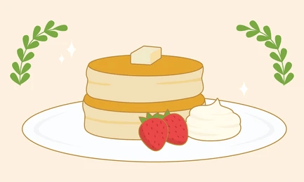

Dessert: Fluffy Japanese Pancakes

Japanese fluffy pancakes, or souffle pancakes, are deliciously light, airy, and jiggly pancakes that are significantly thicker than traditional pancakes. They are made with a sweet egg white meringue by being folded into a custard-like yolk batter, which are then cooked over slow-heat. Toppings include butter, berries, whipped cream and syrup.